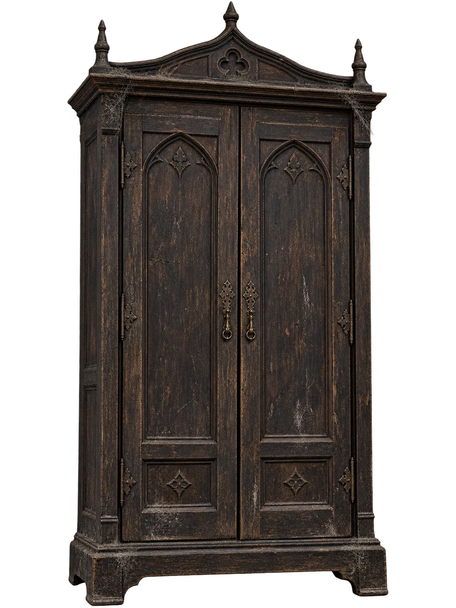
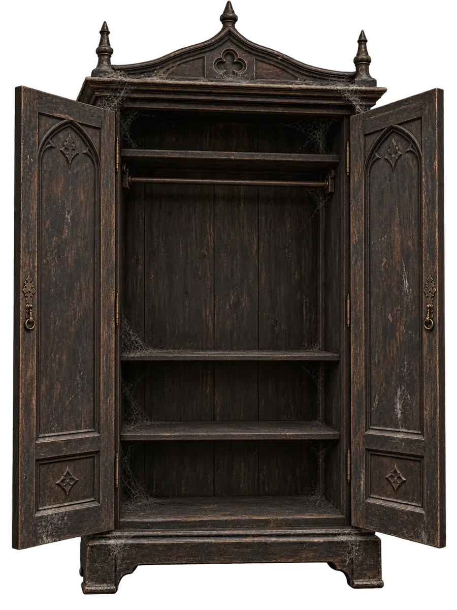

Praktická učebna
Obrana proti černé magii
Profesor Lupin čeká u skříně. Dnešní hodina nebude jen teorie.
Promluv s profesorem nebo prozkoumej skříň.
Krátký test
10 otázek z obrany proti černé magii
10 otázek z obrany proti černé magii
Praktická učebna
Profesor Lupin čeká u skříně. Dnešní hodina nebude jen teorie.
Promluv s profesorem nebo prozkoumej skříň.
„Bubák se živí strachem. Udělej z něj něco směšného a ztratí nad tebou moc.“


Nakresli myší nebo prstem široký oblouk hůlkou. Pak vyber proměnu, která bubáka zesměšní.
Skříň je zavřená.